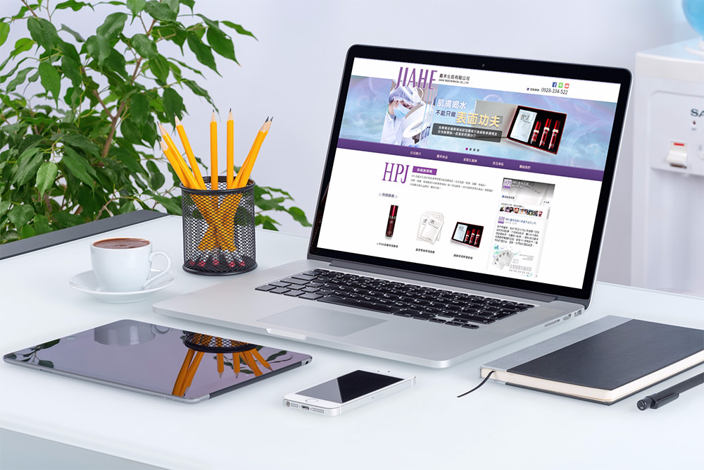
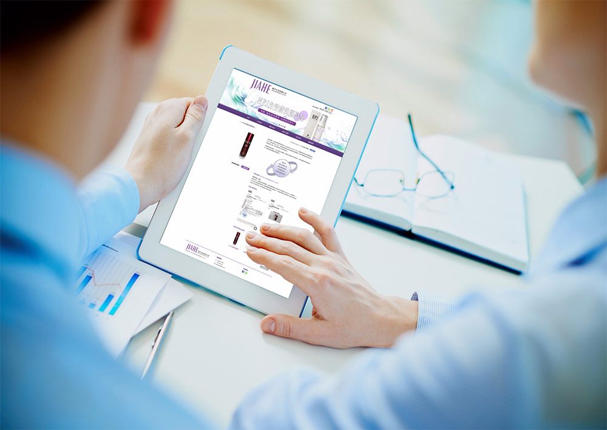
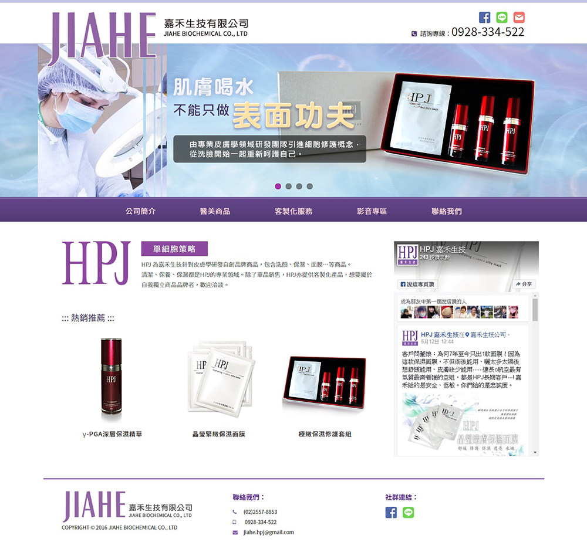
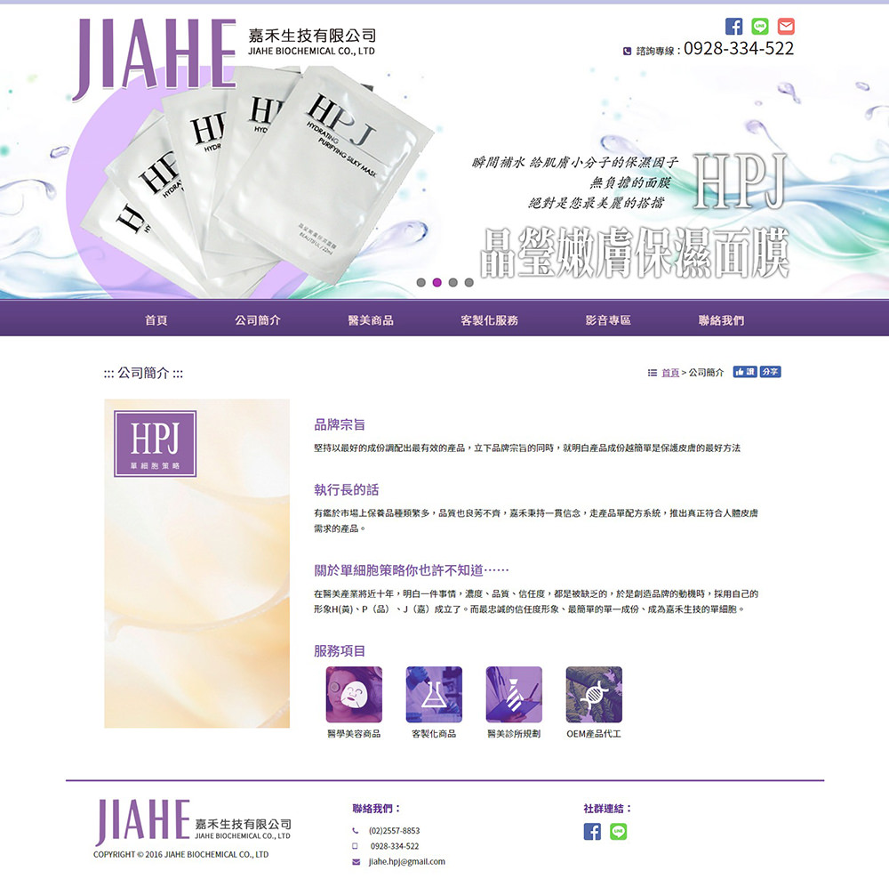
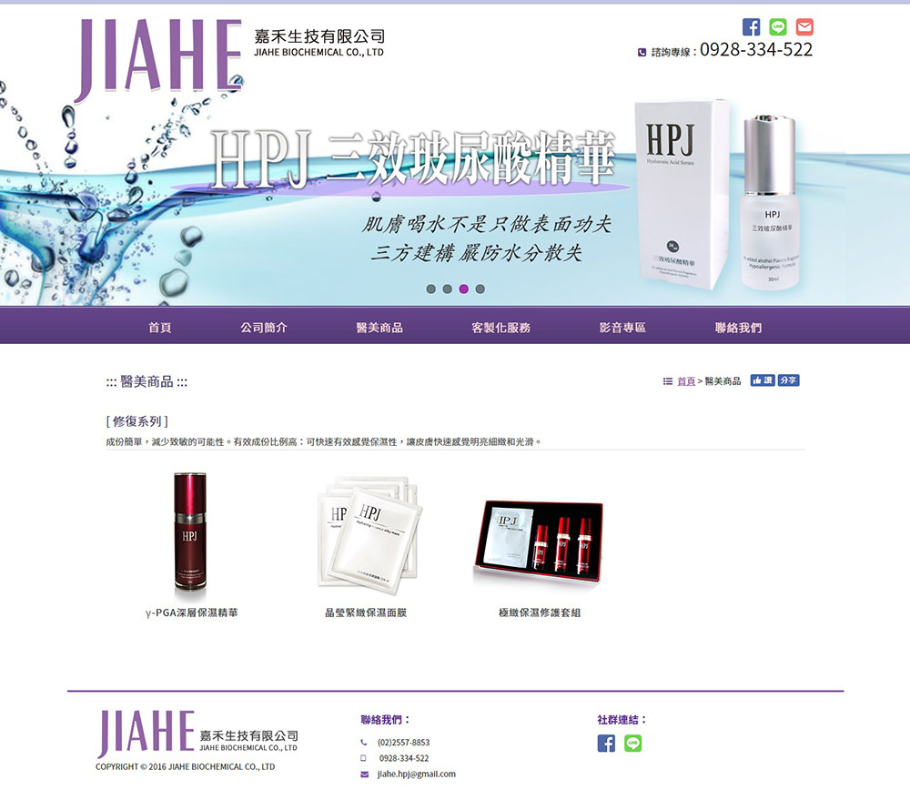
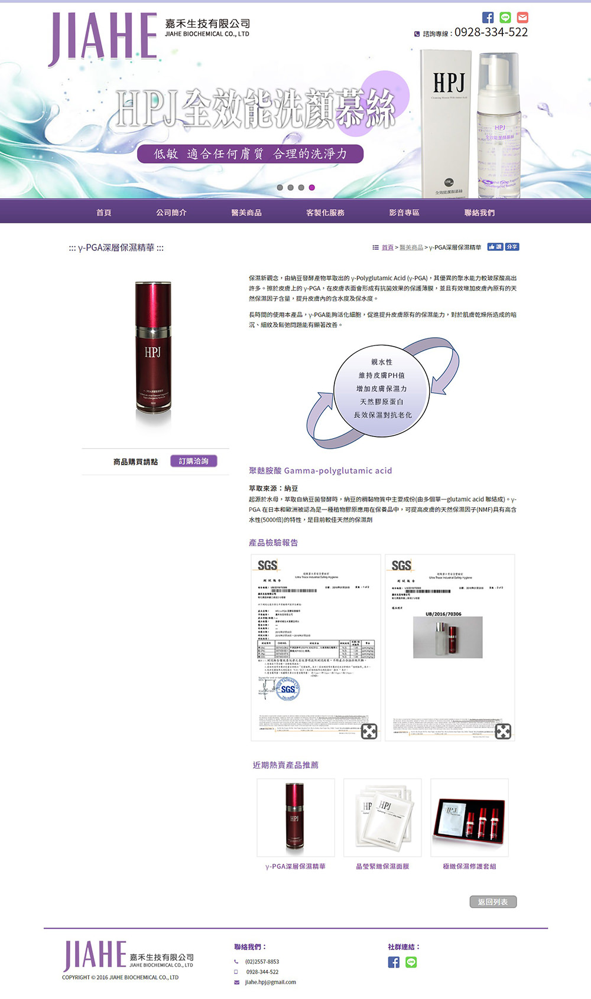
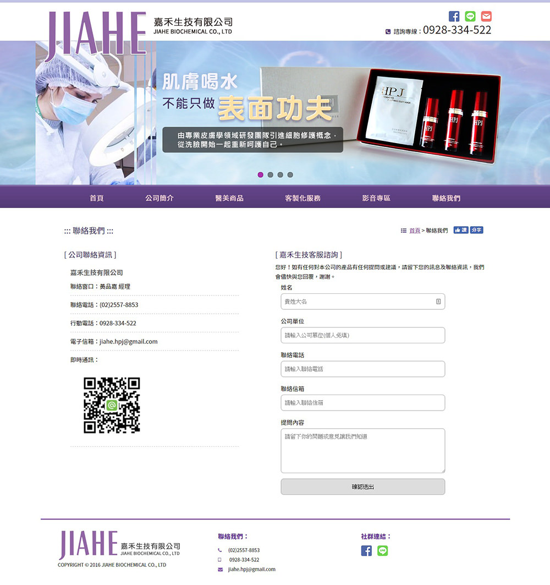

嘉禾生技是家提供肌膚保養品製作的公司，之前大多與坊間的診所合作，本次為了自家產品的販售與推廣，遂委託我們進行網站的規劃與製作。開始設計版面之前，我們習慣先定義一個網站所要選用的色彩，因為顏色是人眼接受到網站的第一直覺印象，接著才是圖片，因此適當的色彩搭配可協助瀏覽者迅速進入網站所營造的情境之中。
 本次我們為嘉禾生技選定的是中性彩度的紫色，我們認為這可以代表生技產業背後的理性科技與情感訴求，加上版面大區塊的圖文編排，可讓訪客在輕鬆無負擔的狀態下瀏覽，正如他們自家產品訴求的輕鬆保養一般，好的設計應該也是隱形的，而讓訪客在無意識的狀態下進行操作瀏覽，這是我認為一個好網站該擁有的基本條件。
    嘉禾生技有限公司
2016
生技研發
網站介面設計 (UI)
網頁製作開發
網站架設及管理